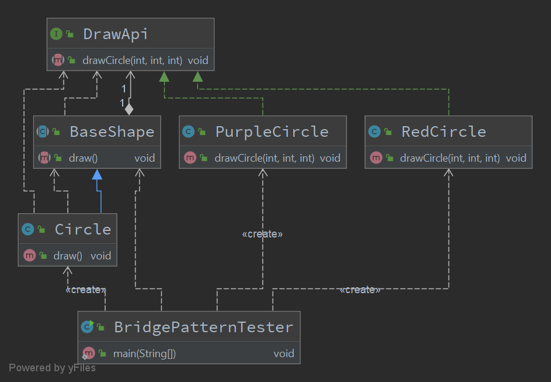

桥接模式
Overview
桥接（Bridge）是用于把抽象化与实现化解耦，使得二者可以独立变化。
这种类型的设计模式属于结构型模式，它通过提供抽象化和实现化之间的桥接结构，来实现二者的解耦。
这种模式涉及到一个作为桥接的接口，使得实体类的功能独立于接口实现类。
这两种类型的类可被结构化改变而互不影响。
主要解决
在有多种可能会变化的情况下，用继承会造成类爆炸问题，扩展起来不灵活
何时使用
实现系统可能有多个角度分类，每一种角度都可能变化
应用实例
墙上的开关，可以看到的开关是抽象的，不用管里面具体怎么实现的
优点
抽象和实现的分离
优秀的扩展能力
实现细节对客户透明
实现

DrawApi
1 2 3 4 5 6 7 8 9 10 11 12 13 14 package individual.cy.learn.pattern.structural.bridge;public interface DrawApi { void drawCircle (int radius, int x, int y) ; }
RedCircle
1 2 3 4 5 6 7 8 9 10 11 package individual.cy.learn.pattern.structural.bridge;public class RedCircle implements DrawApi { @Override public void drawCircle (int radius, int x, int y) { System.out.println("[Draw a red circle] radius = " + radius + ", x = " + x + ", y = " + y); } }
PurpleCircle
1 2 3 4 5 6 7 8 9 10 11 package individual.cy.learn.pattern.structural.bridge;public class PurpleCircle implements DrawApi { @Override public void drawCircle (int radius, int x, int y) { System.out.println("[Draw a purple circle] radius = " + radius + ", x = " + x + ", y = " + y); } }
BaseShape
1 2 3 4 5 6 7 8 9 10 11 12 13 14 15 16 17 package individual.cy.learn.pattern.structural.bridge;public abstract class BaseShape { protected DrawApi drawApi; protected BaseShape (DrawApi drawApi) { this .drawApi = drawApi; } public abstract void draw () ; }
Circle
1 2 3 4 5 6 7 8 9 10 11 12 13 14 15 16 17 18 19 20 21 22 package individual.cy.learn.pattern.structural.bridge;public class Circle extends BaseShape { private final int x; private final int y; private final int radius; public Circle (DrawApi drawApi, int x, int y, int radius) { super (drawApi); this .x = x; this .y = y; this .radius = radius; } @Override public void draw () { drawApi.drawCircle(radius, x, y); } }
Tester
1 2 3 4 5 6 7 8 9 10 11 12 13 14 package individual.cy.learn.pattern.structural.bridge;public class BridgePatternTester { public static void main (String[] args) { BaseShape redCircle = new Circle (new RedCircle (), 0 , 0 , 3 ); BaseShape purpleCircle = new Circle (new PurpleCircle (), 0 , 6 , 3 ); redCircle.draw(); purpleCircle.draw(); } }
1 2 [Draw a red circle] radius = 3, x = 0, y = 0 [Draw a purple circle] radius = 3, x = 0, y = 6